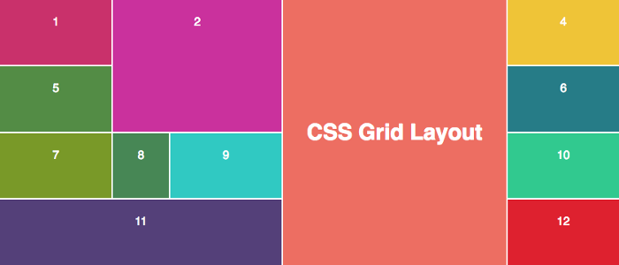
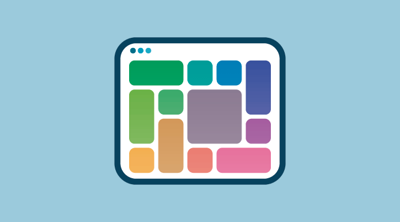

El ccs grid consiste en disponer correctamente los distintos elementos que la componen. El diseño debe
ser atractivo, pero claro al mismo tiempo, y se
debe comprender de forma intuitiva. Las hojas de estilo en cascada (CSS) constituyen una herramienta
para diseñar sitios web con esas características.
Los diseños de cuadrícula son fundamentales para el diseño de sitios web, y el módulo CSS Grid es la
herramienta más poderosa y fácil para crearlo.
En este artículo, lo guiaré a través de los conceptos básicos de CSS Grid lo más rápido posible.
Sanjib Roy . (2020). CSS Grid
Sanjib Roy . (2020). CSS Grid
Silocreativo . (2017) . CSS Grid